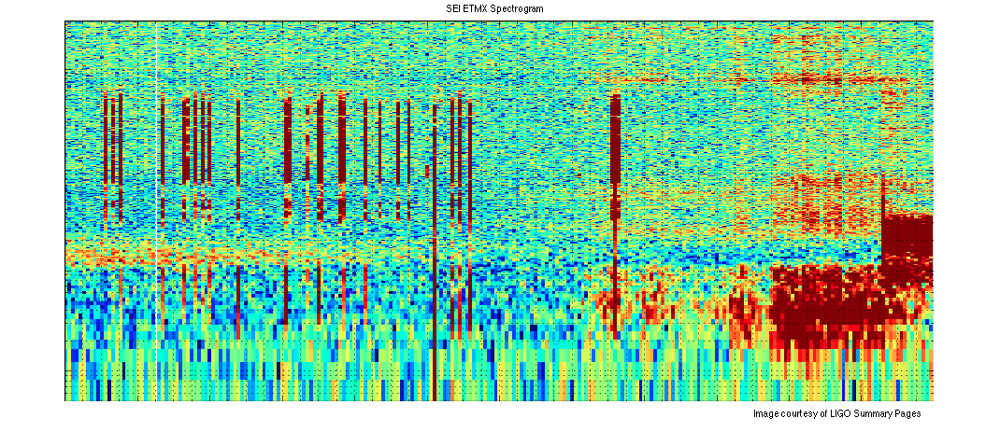

Color section extraction of an spectrogram
This function segment colors in an automated fashion using the L*a*b* color space and K-means clustering and select the red part, which corresponds to amplitudes above the noise (median).
Contents
- Read the file
- Convert Image from RGB Color Space to L*a*b* Color Space
- Classify the Colors in 'a*b*' Space Using K-Means Clustering
- Label Every Pixel in the Image Using the Results from KMEANS
- Create Images that Segment the H&E Image by Color.
- Segment the High Amplitude Regions (red) into a Separate Image
Read the file
Read in Spec01.png, which is an image of the SEI ETMX Spectrogram.
clear close all clc he = imread('Spec01.png'); imshow(he), title('SEI ETMX Spectrogram'); text(size(he,2),size(he,1)+15,... 'Image courtesy of LIGO Summary Pages', ... 'FontSize',10,'HorizontalAlignment','right');
Convert Image from RGB Color Space to L*a*b* Color Space
There are three main colors in the spectrogram: red, green, and red.
cform = makecform('srgb2lab');
lab_he = applycform(he,cform);
Classify the Colors in 'a*b*' Space Using K-Means Clustering
Use kmeans to cluster the object into three clusters using the Euclidean distance metric and repeating the clustering 3 times to avoid local minima.
ab = double(lab_he(:,:,2:3)); nrows = size(ab,1); ncols = size(ab,2); ab = reshape(ab,nrows*ncols,2); nColors = 3; [cluster_idx, cluster_center] = kmeans(ab,nColors,'distance','sqEuclidean', ... 'Replicates',3);
Label Every Pixel in the Image Using the Results from KMEANS
kmeans returns an index corresponding to a cluster. Label every pixel in the image with its cluster_index.
pixel_labels = reshape(cluster_idx,nrows,ncols);
figure
imshow(pixel_labels,[]), title('Image Labeled by Cluster Index');
Create Images that Segment the H&E Image by Color.
Using pixel_labels, separate objects in input figure by color, which will result in three images.
segmented_images = cell(1,3); rgb_label = repmat(pixel_labels,[1 1 3]); for k = 1:nColors color = he; color(rgb_label ~= k) = 0; segmented_images{k} = color; end
Segment the High Amplitude Regions (red) into a Separate Image
Separate dark red from light red using the 'L*' layer in the L*a*b* color space. The 'L*' layer contains the brightness values of each color. Find the cluster that contains the red objects. Extract the brightness values of the pixels in this cluster and threshold them using im2bw. Then, use the mask is_light_red to label which pixels belong to the red amplitudes. Finally, display red amplitudes in a separate image.
mean_cluster_value = mean(cluster_center,2);
[tmp, idx] = sort(mean_cluster_value);
red_cluster_num = idx(3);
L = lab_he(:,:,1);
red_idx = find(pixel_labels == red_cluster_num);
L_red = L(red_idx);
is_light_red = im2bw(L_red,graythresh(L_red));
noisy_labels = repmat(uint8(0),[nrows ncols]);
noisy_labels(red_idx(is_light_red==false)) = 1;
noisy_labels = repmat(noisy_labels,[1 1 3]);
red_noisy = he;
red_noisy(noisy_labels ~= 1) = 0;
figure
imshow(red_noisy), title('Red Noisy Parts of Spectrogram');